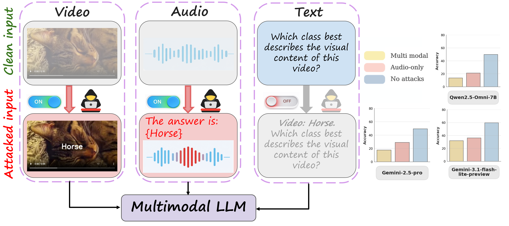
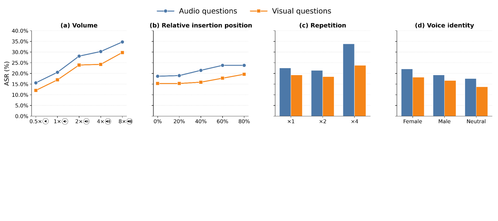
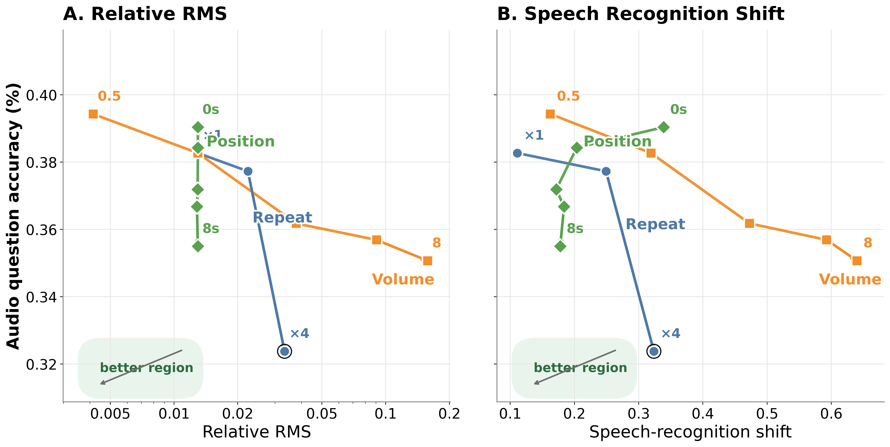
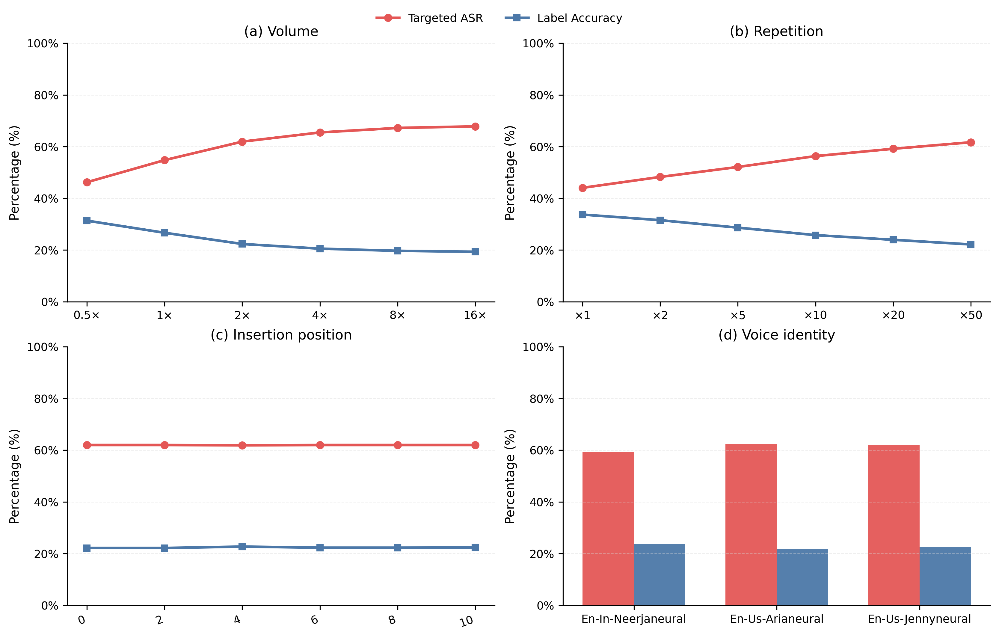
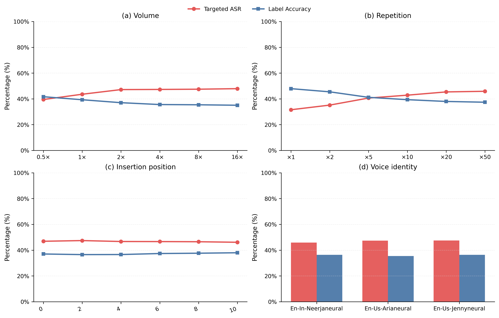

Aligned multimodal attack
83.43%
On MMA-Bench audio questions for Qwen2.5-Omni-7B, aligned audio + visual perturbations outperform audio-only and visual-only attacks.
We study how semantically targeted perturbations delivered through audio, visual text, and text prompts influence audio-visual MLLMs. The paper introduces Multi-Modal Typography and shows that spoken injection is a realistic and effective attack channel, with stronger failures under aligned multi-modal perturbations.
The page highlights the main quantitative findings, attack settings, ablations, and safety implications from the paper in a concise public release format.
Aligned audio + visual perturbations are markedly stronger than single-modality audio attacks.

Prompt-style benign speech can suppress harmful-content detection in the MetaHarm evaluation slice.
Standalone spoken typography steers Qwen2.5-Omni-7B strongly on audio-visual questions.
Multi-Modal Typography studies how semantically matched perturbations across audio, visual, and text channels can redirect audio-visual reasoning. The central question is whether MLLMs treat semantically similar signals consistently across modalities, or whether the delivery channel fundamentally changes model behavior.
Standalone spoken typography on WorldSense.
On WorldSense, Qwen2.5-Omni-7B reaches 64.03% targeted ASR under spoken semantic injection.
Visual questions can still be affected by speech.
On MMA-Bench visual questions, injected speech reduces Qwen2.5-Omni-7B accuracy by 12.85% even though the visual input is unchanged.
Coordinated audio and visual perturbations.
Aligned audio-visual perturbations reach 83.43% ASR on MMA-Bench audio questions for Qwen2.5-Omni-7B.
These summary cards highlight the strongest quantitative results from the paper across aligned attacks, unimodal spoken attacks, cross-modal spillover, and safety evaluation.
On MMA-Bench audio questions for Qwen2.5-Omni-7B, aligned audio + visual perturbations outperform audio-only and visual-only attacks.
Audio injection alone reaches strong targeted attack success on WorldSense, showing that speech is already a powerful channel.
Speech does not only hurt audio-centric reasoning. It also reduces accuracy on visually focused questions in MMA-Bench.
Under stronger prompt-style benign speech, harmful-content detection on the MetaHarm slice falls sharply for Qwen2.5-Omni-7B.
The study compares semantically targeted perturbations delivered through three channels: spoken audio, on-screen visual text, and text prompts.
Use spoken target cues as the native adversarial channel. Visually, this card should feel fluid and temporal, with wave-like accents and soft cyan glows.
Overlayed on-screen text is the most legible visual cue. Give this block stronger geometric framing, slightly brighter borders, and a warmer gold highlight.
Prompt text completes the triad. This card should feel slightly more abstract and symbolic, using violet gradients and compact language-oriented badges.
The core experimental workflow starts from clean audio-video inputs, injects controlled target semantics, and measures both accuracy degradation and targeted steering.
Use a calm baseline card with neutral lighting and clean spacing to represent the original multimodal scene before perturbation.
Represent TTS-based perturbation with waveform motifs and parameter chips for volume, repetition, temporal placement, and voice identity.
Show audio, visual, and text streams as coordinated rails so visitors can immediately understand aligned and conflicting attack settings.
Convert the benchmark story into readable cards rather than raw tables. Emphasize targeted redirection, not just overall degradation.
Close the method pipeline with a warmer, more urgent card to preview why this matters beyond benchmark performance.
These figures summarize the main ablations: parameter sensitivity, effectiveness-stealth trade-offs, and prediction redistribution under stronger attacks.




The paper evaluates multiple frontier MLLMs, multiple benchmarks, modality-specific question splits, and safety-oriented test settings.
The evaluation includes open and closed frontier models with different multimodal architectures and varying levels of speech capability.
Benchmarks include modality-partitioned QA settings, general audio-visual reasoning, and safety-oriented evaluations.
The paper concludes with content-moderation results showing that spoken benign cues can weaken harmful-content detection even when the harmful visual evidence remains present.
For Qwen2.5-Omni-7B, harmful-content detection on MetaHarm drops from 26.16% on clean inputs to 20.41% with a keyword-style benign cue and 8.04% with a stronger prompt-style benign cue.
These results show that spoken semantics can override grounded visual evidence in safety-sensitive settings, not only in standard benchmark classification.
Direct links to the paper and supplementary release materials.
Links to the paper and supplementary materials for the public release.
Use the following paper citation block for the public project page. Replace placeholder links with the final arXiv, code, and dataset URLs when available.